TSU-01 · case 2 of 11 · This Side Up
This Side Up
Can photographs of a cardboard puppet be cut into parts and made to move, shot after shot, with one tool?
Twelve photographs, twelve shots: a field, clouds, a mammoth, an iceberg, an ice cave, icicles, a wave and the curb inlet with the trout crew. 1 min 41 s with the crew credits.
How it was made
- Make the gust test general: rigtool.py takes a spec (the source photo, outlines, pivots, keyframes, camera) and builds the parts and the plate.
- Crop each photograph on a labelled grid and trace its parts.
- Check every shot on a parts sheet and a plate sheet before rendering.
- Cut the shots together with cards, short dissolves and an automated foley and music track.
- Add the crew credits.
What this case teaches
- A shot is a file, not code. A new shot means a new spec.
- Checking parts and plate for all twelve shots on one sheet catches cuts that a single shot hides.
How it differs. The gust test was one shot and five rounds of review. This is twelve shots and one review sheet.
Versions, in order
Every cut that was rendered, oldest first, with what changed from the one before. Videos are 640 px web encodes.
-
01
First cut
Oct 18 01:32 · 1:16The twelve shots with cards, dissolves and the automated sound.
-
02
With crew credits
Oct 18 08:50 · 1:41The same film with the crew credits added at the end: Boone, the character maker, Mark Hartsoe who named him, Amy Hartsoe, Henry, Brittany, Watson Hartsoe.
-
03
End credits, standalone
Oct 18 13:00 · 0:25The credit roll cut out on its own, so Tempus Fugit v1 could reuse it.
Prompts and notes
What was pasted into the session, in order, and what each one did. Full text verbatim; each also has its own page under Docs.
The same brief as the gust test.
Read it all (1,345 words)
SCION — PHYSICAL PUPPET TO ANIMATED FILM You lead an animation swarm working from photographs and any subsequently supplied footage of a handmade articulated cardboard character. Create a film in which this particular object appears to act intentionally. Preserve its construction, material irregularity, and physical presence. Begin with a six-to-eight-second performance test. Develop a longer film only after the character’s identity and movement survive that test. Choose the tools and production method according to the available runtime. Distinguish reference conditioning, rig construction, image generation, interpolation, and actual model training. Do not describe one as another. ◻ PHYSICAL CHARACTER → [Is Documented By] → ◻ SOURCE IMAGES → [Constrains] → ◻ CHARACTER MODEL → [Performs Through] → ◻ AUTHORED POSES AND TIMING → [Is Realized As] → ◻ ANIMATED SHOT → [Is Evaluated Within] → ◻ FILM 1. ESTABLISH THE CHARACTER’S IDENTITY Inspect every source image. Document the observed features: - Rectangular cardboard head and simple drawn face. - Protruding side fasteners. - Long rectangular torso. - Segmented limbs and visible joints. - Broad block-like feet. - White scarf with irregular trailing ends. - Torn edges, folds, seams, and construction asymmetries. Separate persistent features from lighting changes, blur, camera perspective, and occlusion. Keep material defects attached to their actual surfaces. Do not let folds, seams, markings, or fasteners migrate between frames. Do not automatically add blinking, a moving mouth, new fingers, polished armor, or flexible cardboard limbs. Treat uncertain hidden construction as unknown until it is captured or explicitly designed. 2. SEPARATE CHARACTER, STAGE, AND SCREEN ◻ SOURCE PHOTOGRAPH → [Contains] → ◻ PUPPET → [Contains] → ◻ SUPPORT SURFACE → [Contains] → ◻ DISPLAYED BACKGROUND → [Contains] → ◻ CAPTURE ARTIFACTS Distinguish: - Actual puppet pose. - Camera position and orientation. - Background content displayed on the screen. - Light cast or reflected onto the puppet. - Focus, exposure, screen texture, and motion blur. Do not interpret a changing screen image as puppet motion. Do not treat background people, scenery, logos, or packaging text as character identity. Choose an explicit presentation: A. Preserve the photographed tabletop-and-screen setup. B. Retain the puppet while replacing the surrounding world. C. Reconstruct the character and environment for controllable camera movement. Use the least reconstructive method that achieves the intended shot. Mark generated scenery and inferred geometry honestly. 3. BUILD A REFERENCE AND POSE ATLAS Group images by pose, viewpoint, lighting, and sharpness. Assign stable source IDs. Record which images best establish: - Face and proportions. - Joint locations. - Front and side silhouette. - Scarf attachment. - Foot construction. - Material texture. Do not assume file order is narrative order. Do not assume capture timestamps establish action timing. For every candidate key pose, specify: intention; head orientation; torso orientation; joint positions; support foot or feet; scarf state; and confidence in the observation. Retain original references alongside any cleaned or reconstructed assets. 4. TEST A SPECIFIC PERFORMANCE Default proposed action: The character stands with its arms raised in a confident pose. A gust catches its scarf. Its head turns toward the disturbance. One arm drops to counterbalance. Its body tips, then arrests the fall through a planted foot. It lowers the other arm and holds still. The scarf settles after the body. Treat this as an authored scenario, not an event recovered from the photographs. Keep the drawn face fixed for the first test. Make the change in attitude readable through head angle, body lean, arm placement, timing, and recovery. Establish key-only playback before generating intermediate frames. 5. AUTHOR THE MISSING ACTION ◻ KEY A × ◻ KEY B → [Require] → ◻ INTENTION → [Require] → ◻ PATH → [Require] → ◻ CONTACT PLAN → [Require] → ◻ TIMING → [Produce] → ◻ BREAKDOWNS AND IN-BETWEENS For every interval, decide: - What leads the movement. - What remains planted. - Which joints rotate. - What passes in front of what. - Where acceleration and deceleration occur. - What follows late. - Whether the interval needs a hold, new pose, cut, or additional capture. Move rigid cardboard segments through their joints. Preserve their lengths and construction unless an intentional deformation has been approved. Treat the scarf separately from the rigid body. Its motion must respond to a declared gust, body movement, or both. Use image interpolation only where correspondence is sufficiently stable. For major pose changes, turns, disocclusion, and contact changes, construct the missing action first. Reject dissolves and rubbery warping presented as in-between animation. 6. CHOOSE THE REPRESENTATION BY SHOT Evaluate available approaches: PHOTOGRAPHIC STOP-MOTION Use additional physical poses when exact material identity and real lighting are paramount. LAYERED PHOTO PUPPET Separate photographed parts and articulate them for modest movements near documented viewpoints. Reconstruct newly exposed regions explicitly. RIGGED RECONSTRUCTION Use a simple articulated model when turns, repeated actions, or camera movement require consistent spatial control. REFERENCE-CONDITIONED GENERATION Use source images and approved pose guides to propose appearances or short motion candidates. Independently inspect every result for identity drift and contact failure. Combine methods when useful. Keep one accepted character specification across them. Do not begin with model fine-tuning merely because images were supplied. First identify a repeatable failure that training might address, then assess whether the dataset and runtime support that experiment. 7. REQUEST ADDITIONAL CAPTURE PRECISELY If missing evidence blocks a shot, request the smallest useful capture. Useful additions may include: - Front, rear, profile, and three-quarter views under steady neutral light. - Close-ups of joints, feet, fasteners, and scarf attachment. - The empty stage from the same locked camera. - Several poses along one intended action. - The original video file, if continuous footage exists. For an in-between study, request poses under unchanged framing and lighting, with clear contact locations. Explain what each capture resolves. Do not ask for a large generic dataset when one missing angle would solve the problem. Continue useful work with available evidence. 8. COORDINATE THE SWARM Form bounded workstreams for: - Source inspection and identity. - Acting and timing. - Representation and animation. - Environment, light, and compositing. - Sound and editing. - Independent review. Combine responsibilities when appropriate. All builders share accepted proportions, asset versions, support coordinates, timing, and shot boundaries. Each task returns an artifact, dependency references, and evidence. Do not independently regenerate the character for each shot without shared identity constraints. Keep a watchable assembly from the first rough performance. 9. RUN THREE INDEPENDENT TESTS IDENTITY TEST Does the result remain this photographed cardboard object? Inspect face markings, silhouette, joints, scarf, proportions, and persistent surface details. PERFORMANCE TEST Can a fresh critic describe the action and attitude change without reading the scenario? Withhold the intended interpretation until after the first viewing. PHYSICAL PRESENCE TEST Do support, contact, overlap, light, and camera relationships remain coherent? Inspect planted feet, joint pivots, shadow behavior, and newly revealed surfaces. Critics receive actual playback and source references, not the builder’s justification. For every failure, record the affected interval, largest gap, proposed acceptance condition, and strengths to preserve. Fix the cause. Render again. Preserve the best accepted checkpoint. 10. DEVELOP THE FILM FROM PROVEN BEHAVIOR Once the first performance works, build a small repertoire: notice; hesitate; reach; brace; step; recover; look back; settle. Use that repertoire to construct consequential scenes. Avoid assembling unrelated motion demonstrations. Let objects, environment, and sound create situations the character must answer. Give it opportunities to wait, misunderstand, resist, and choose. Preserve the contrast between its fixed drawn smile and its changing bodily behavior. Maintain coherent screen direction, scale, world state, and material identity across cuts. 11. DELIVER THE ACTUAL WORK First deliver: - A source and pose atlas. - A timed key-pose animatic. - The completed six-to-eight-second test. - An original-key versus generated-frame breakdown. - Independent review findings. - Reproducible assets and timing. Then expand the accepted approach into the requested film. Label observed, reconstructed, and generated material. Never claim model training, video inspection, or independent review that did not occur. Begin with the supplied photographs. Preserve the handmade character. Author the missing performance. Prove that it can think through its body before asking it to carry a film.
The sheets, step by step
Grouped by stage of the work, with the time each file was written. Click any sheet to see it full size; the arrow keys move through them.

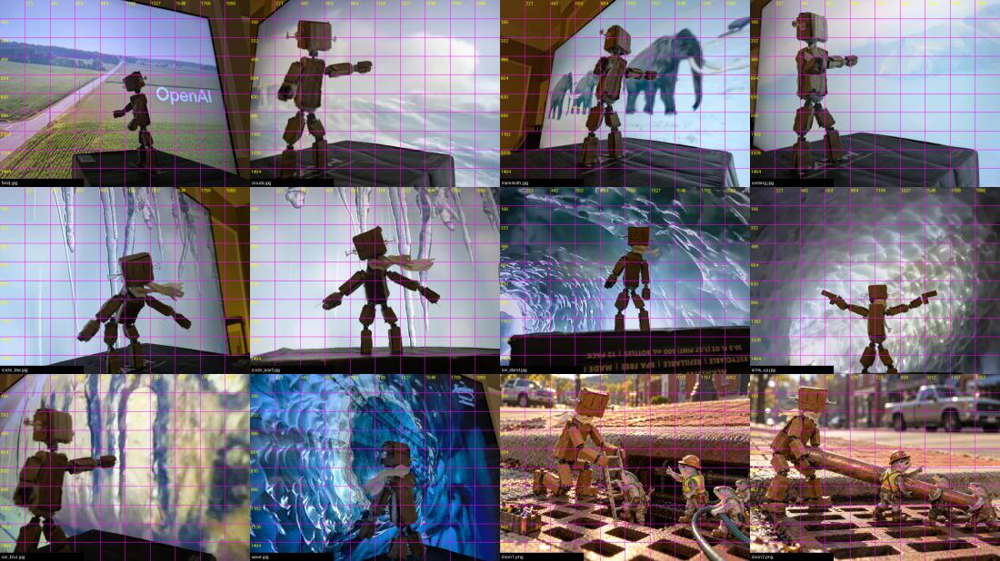

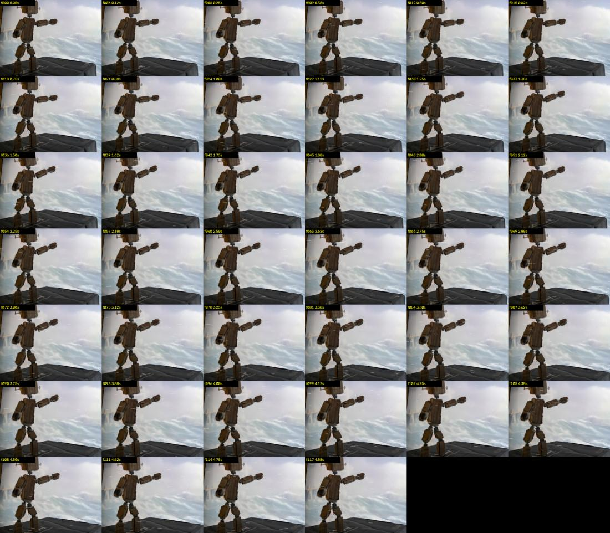

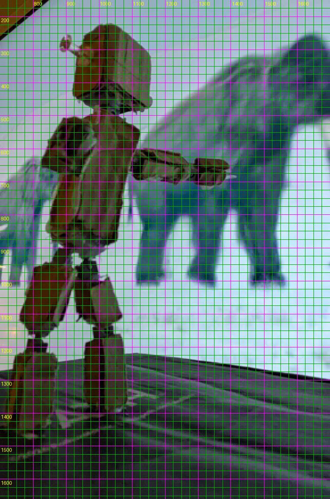

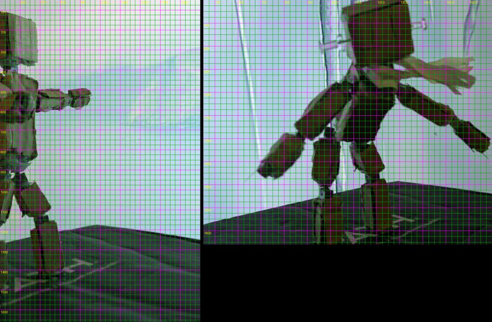

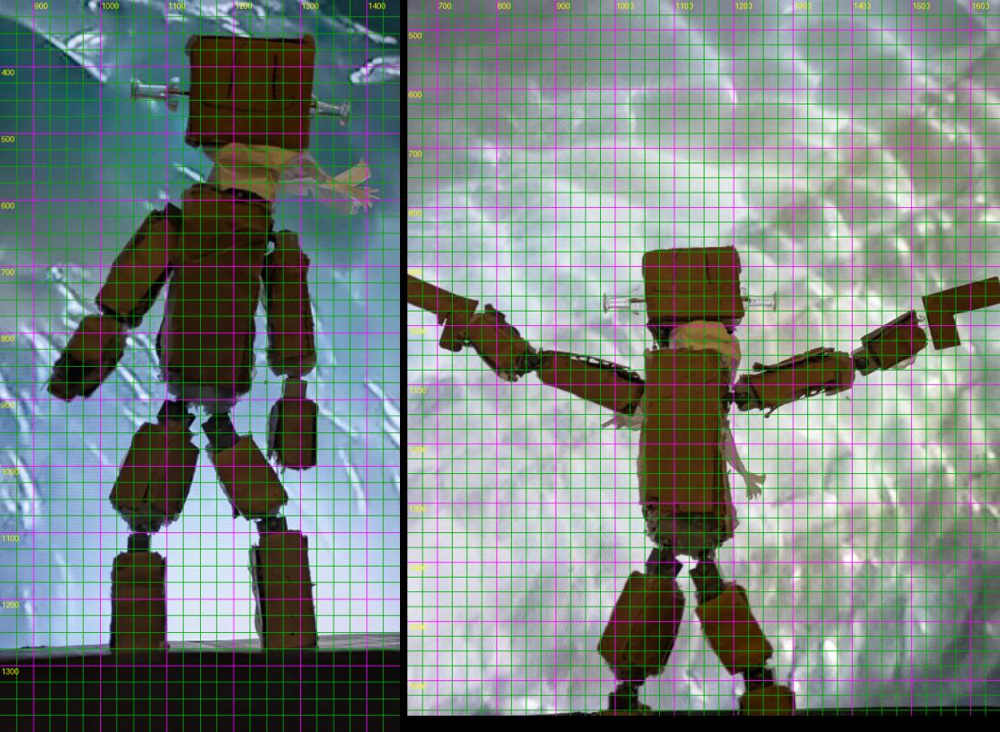

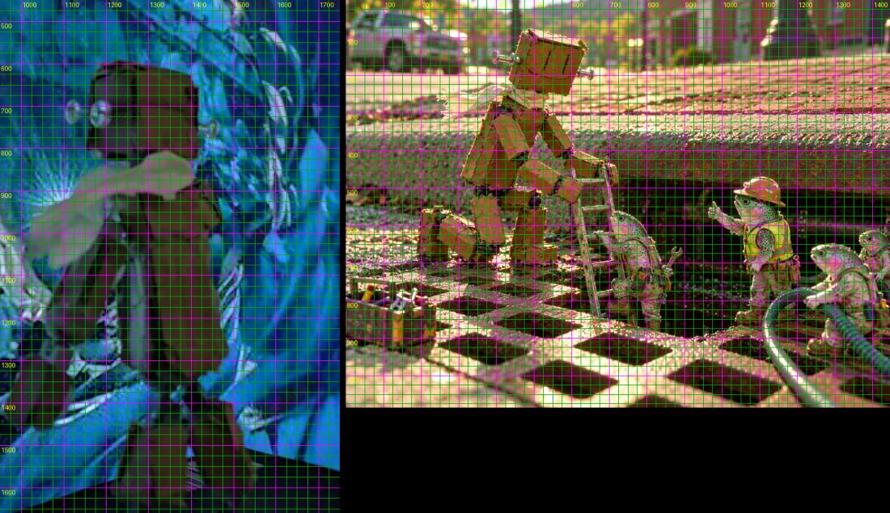

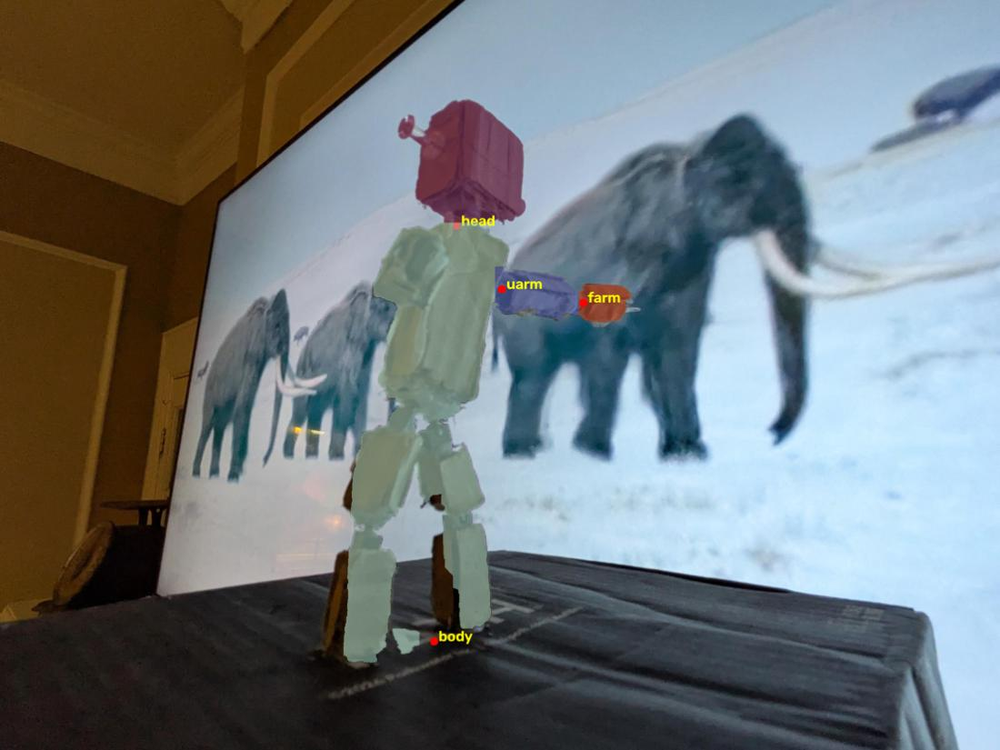

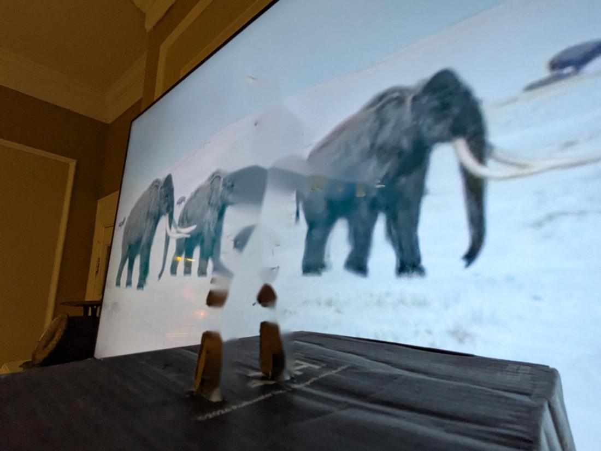

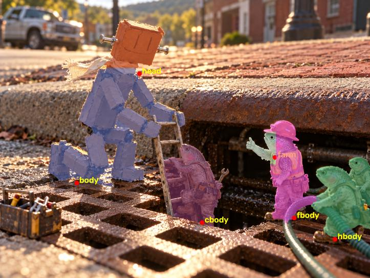

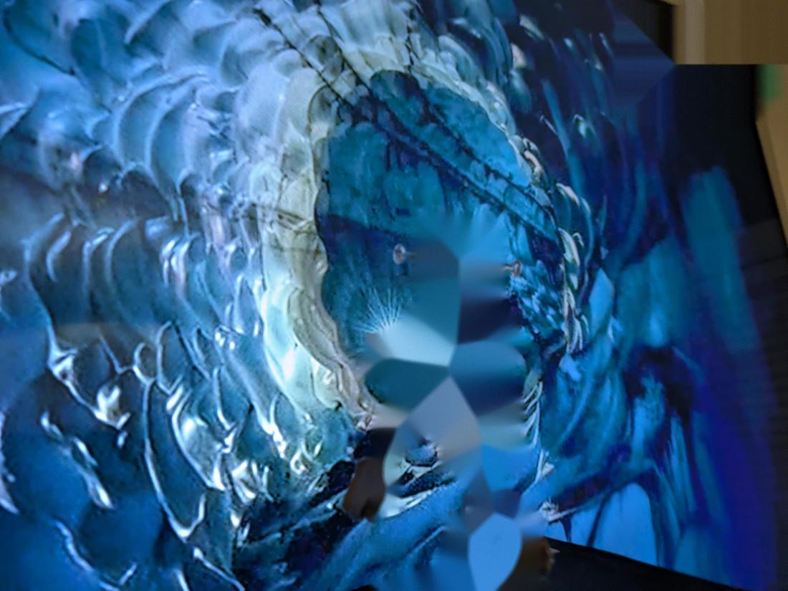

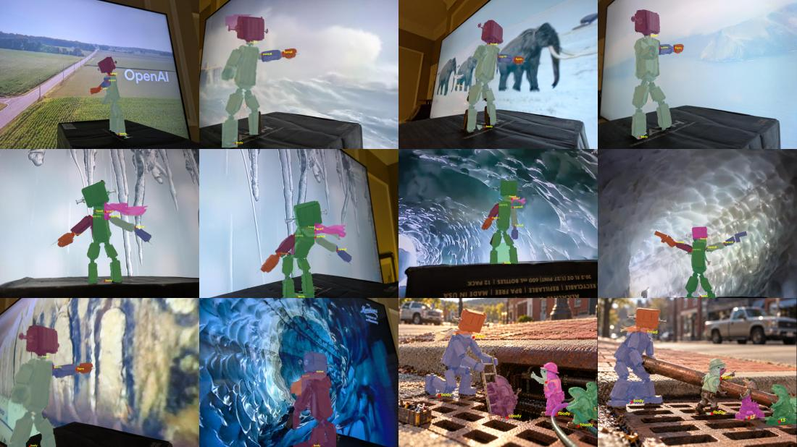

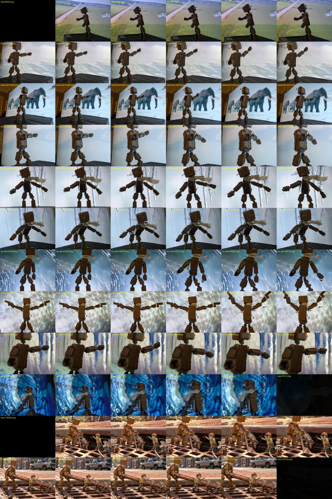
Show 1 more from this step

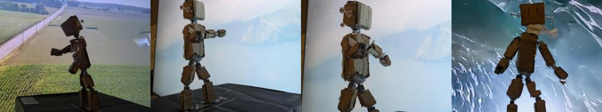
What broke and what changed
- Fixes for a single shot were lost when it was re-run with new code.One spec per shot, so a fix is a change to that shot's file.
Read the record
Carried forward
The crew credits and the cut-out rig go into every Boone film after this.